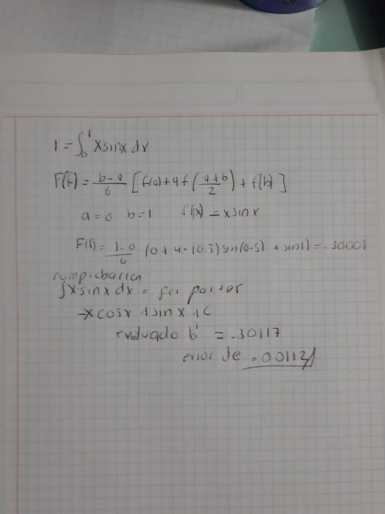
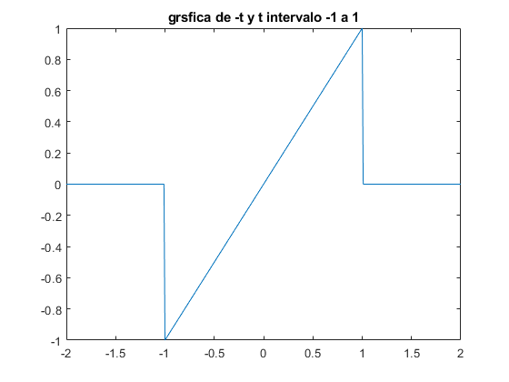
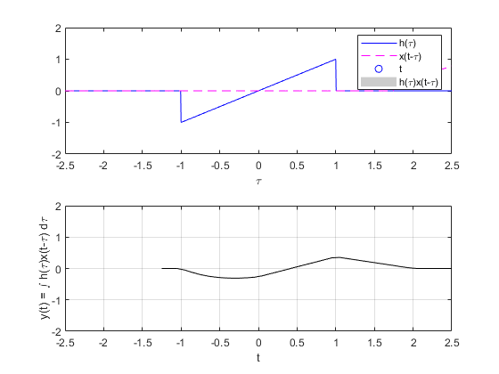
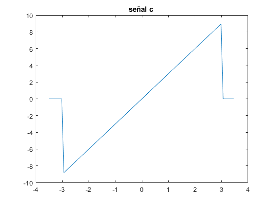
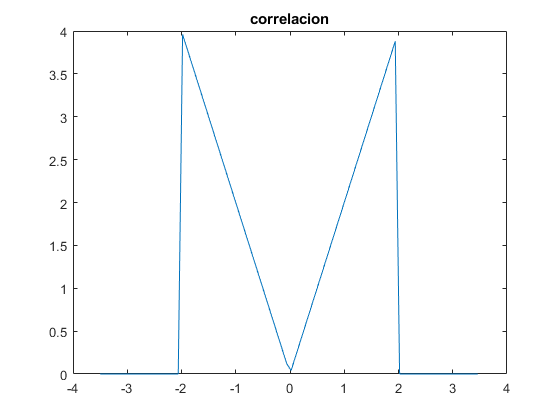
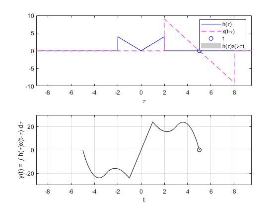
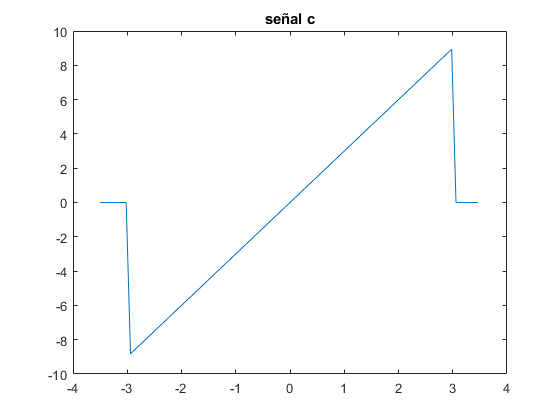
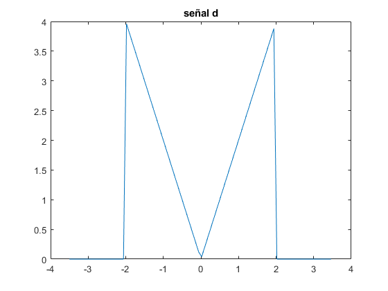
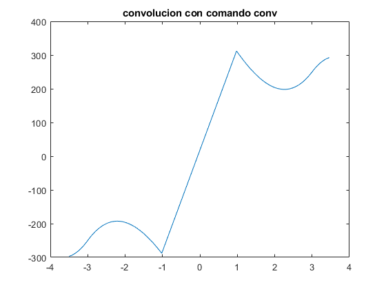

Practica 4 Convolucion y correlacion de señales
SEÑALES EN TIEMPO DISCRETO
Contents
INTEGRANTES
- Chavez Andrade Luis Daniel
OBJETIVOS
- Conocer métodos básicos de integración numérica
- Manipulación de instrucciones en MATLAB
- Simular convoluciones y correlaciones de señales continuas
- Simular convoluciones y correlaciones de señales discretas
ENTREGABLES
- Para el PR04 reporte la grafica de la simulación númerica de la convolución y compare con el resultado análitico que obtuvo para el problema 1, esto es, su práctica tendrá que incluir una llamada a la funciónn convconm y posteriormente se tendrá que mostrar (mediante el Publish) la gráfica tanto de las señales involucradas como el resultado de la convolución, y en esta última gráficara su resultado analitico, se tendrá que incluir el resultado analitico.
- Para el PR05 reporte la grafica de la simulación númerica de la correalción y compare con el resultado análitico que obtuvo para el problema e), esto es, su práctica tendrá que incluir una llamada a la funciónn convconm y posteriormente se tendrá que mostrar (mediante el Publish) la gráfica tanto de las señales involucradas como el resultado de su correlación, y en esta última graficara su resultado analitico, se tendrá que incluir el resultado analitico.
- Realice la simuación de la convolución de las señales (c) con (d) del problema 3.1.1
- Realice la simuación de la correlación de las señales (c) con (d) del problema 3.1.1
- Realice la la convolución de las señales (c) con (d) del problema 3.1.1 utilizando el comando conv de MATLAB, muestre el código utilizado y gráfique el resultado, sugerencia: Utilice las propiedades de traslación de la convolución.
INTEGRACION NUMERICA
En análisis numérico, la integración numérica constituye una amplia gama de algoritmos para calcular el valor numérico de una integral definida y, por extensión, el término se usa a veces para describir algoritmos numéricos para resolver ecuaciones diferenciales
NEWTON-COTES
En análisis numérico las fórmulas de Newton-Cotes (nombradas así por Isaac Newton y Roger Cotes) son un grupo de fórmulas de integración numérica de tipo interpolatorio, en las cuales se evalúa la función en puntos equidistantes, para así hallar un valor aproximado de la integral. Cuanto más intervalos se divida la función más preciso será el resultado.
METODO DEL TRAPECIO
A este método se le conoce con el nombre de la regla del trapecio compuesta. % Para aplicar este método siga los siguientes pasos: Divida el intervalo [a, b] en subintervalos de igual medida. Aproxime en cada subintervalo la función f(x) por una recta
EJEMPLO HECHO A MANO

EJERCICIO 1 DE PR04
Convolucion de las siguientes dos señales Primera señal
a=@(t) (exp(-t)).*((t>=0)&(t<=1));
t=-2:.01:2;
figure
plot(t,a(t))
title({'grafica de e^-t '});
% Segunda señal
b=@(t) ((-(-t).*((t>=-1)&(t<0))) + ((t).*((t>=0)&(t<=1))));
figure
plot(t,b(t))
title({'grsfica de -t y t intervalo -1 a 1'});
%convolucion
figure
convconm(a,b)
  EJERCICIO E DE PR05
realiza a autocorrelacion de x1(t) = u(t) ? 2u(t ? 3) + u(t ? 4) N
EJERCICIO 3.1.1
CONVOLUCION Y CORRELACION DE LAS SEÑALES C Y D
x=@(t) ((-(-3*t).*((t>=-3)&(t<0))) + ((3*t).*((t>=0)&(t<=3))));
t=-3.5:.08:3.5;
figure
plot(t,x(t))
title({'señal c '});
%SEÑAL D
h=@(t) (((-2*t).*((t>=-2)&(t<0))) + ((2*t).*((t>=0)&(t<=2))));
figure
plot(t,h(t))
title({'señal d'});
%la señal al ser par e invertirla es lo mismo que la convolucion'
title({'correlacion'});
convconm1(x,h)
   REALICE LA CONVOLUCION OCUPANDO COMANDO CONV
DE C Y D
%SEÑAL C x=@(t) ((-(-3*t).*((t>=-3)&(t<0))) + ((3*t).*((t>=0)&(t<=3)))); figure plot(t,x(t)) title({'señal c'}); %SEÑAL D h=@(t) (((-2*t).*((t>=-2)&(t<0))) + ((2*t).*((t>=0)&(t<=2)))); figure plot(t,h(t)) title({'señal d'}); figure c=conv(x(t),h(t),'same'); plot(t,c) title({'convolucion con comando conv'});  